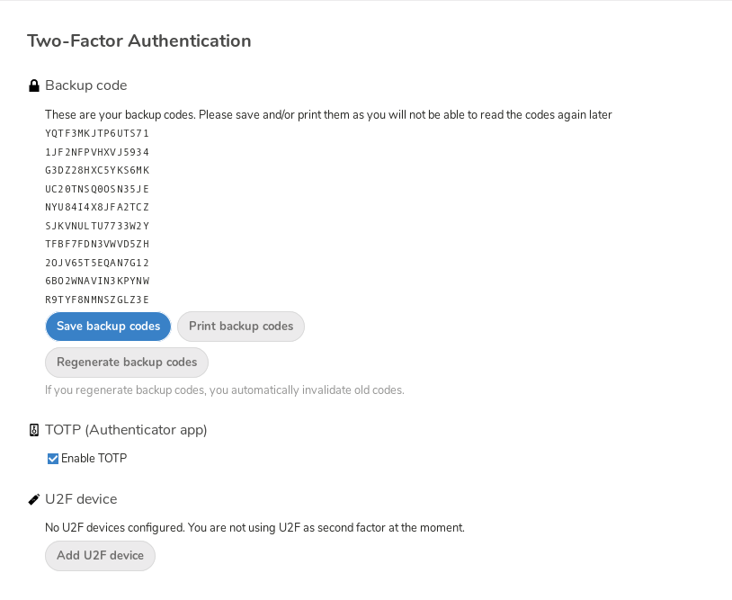

Использование двухфакторной аутентификации
Двухфакторная аутентификация (2FA) - это способ защитить вашу учетную запись Nextcloud от несанкционированного доступа. Это работает, требуя два разных «доказательства» вашей личности. Например, что-то, что вы знаете (например, пароль) и что-то, что у вас есть, как физический ключ. Как правило, первым фактором является пароль, который у вас уже есть, а вторым может быть текстовое сообщение, которое вы получаете, или код, который вы генерируете на своем телефоне или другом устройстве (что-то, что у вас есть). Nextcloud поддерживает множество 2-х факторов и может быть добавлено еще больше.
После того как администратор включил приложение для двухфакторной аутентификации, вы можете включить и настроить его в Персональные настройки. Ниже вы можете увидеть, как.
Настройка двухфакторной аутентификации
In your Personal Settings look up the Second-factor Auth setting. In this example this is TOTP, a Google Authenticator compatible time-based code:

Вы увидите свой секрет и QR-код, который можно отсканировать с помощью приложения TOTP на вашем телефоне (или другом устройстве). В зависимости от приложения или инструмента введите код или отсканируйте QR-код, и на вашем устройстве будет отображаться код входа, который меняется каждые 30 секунд.
Коды восстановления в случае, если вы потеряли второй фактор
You should always generate backup codes for 2FA. If your 2nd factor device gets stolen or is not working, you will be able to use one of these codes to unlock your account. It effectively functions as a backup 2nd factor. To get the backup codes, go to your Personal Settings and look under Second-factor Auth settings. Choose Generate backup codes:

You will then be presented with a list of one-time-use backup codes:

Вы должны поместить эти коды в безопасное место, где вы можете их найти. Не соединяйте их со вторым фактором, таким как мобильный телефон, но убедитесь, что если вы потеряете один, у вас все еще есть другой. Хранить их дома, наверное, лучше всего.
Вход с двухфакторной аутентификацией
After you have logged out and need to log in again, you will see a request to enter the TOTP code in your browser. If you enable not only the TOTP factor but another one, you will see a selection screen on which you can choose two-factor method for this login. Select TOTP:

Теперь просто введите свой код:

Если код был верным, вы будете перенаправлены на вашу учетную запись Nextcloud.
Примечание
Поскольку код основан на времени, важно, чтобы часы вашего сервера и вашего смартфона были почти синхронизированы. Временной сдвиг в несколько секунд не будет проблемой.
Использование двухфакторной аутентификации с аппаратными токенами
Вы можете использовать двухфакторную аутентификацию на основе аппаратных токенов. Известно, что работают следующие устройства:
На основе TOTP:
На основе FIDO U2F:
Использование клиентских приложений с двухфакторной аутентификацией
После того, как вы включили 2FA, ваши клиенты больше не смогут подключаться только с вашим паролем, если у них также нет поддержки двухфакторной аутентификации. Чтобы решить эту проблему, вы должны сгенерировать пароли для конкретных устройств для них. Смотрите Управление подключенными браузерами и устройствами для получения дополнительной информации о том, как это сделать.
Considerations
If you use WebAuthn to login to your Nextcloud be sure to not use the same token for 2FA. As this would mean you are again only using a single factor.